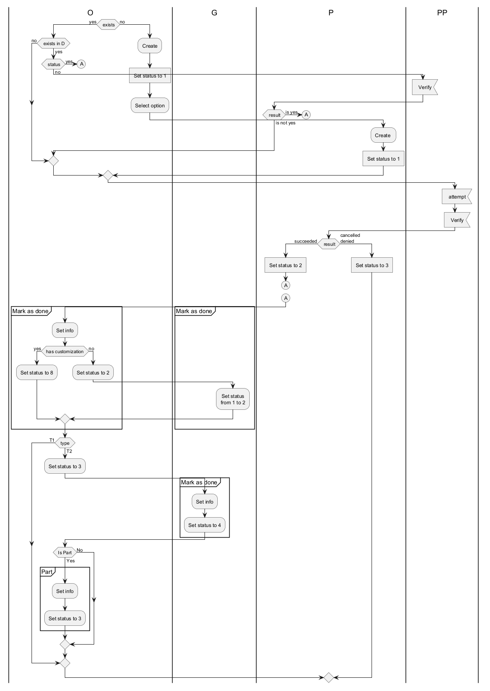

@startuml
/''''''' Params '''''''/
skinparam defaultTextAlignment center
/''''''' Definitions '''''''/
|O|
|G|
|P|
|PP|
/'#D52B1E|'/
|O|
if ( exists) then (yes)
if ( exists in D) then (yes)
if ( status) then (yes)
(A)
detach
else (no)
|PP|
:Verify; <<input>>
|P|
if ( result) then (is yes)
(A)
detach
else (is not yes)
endif
|O|
endif
else (no)
endif
else (no)
:Create;
:Set status to 1;<<task>>
:Select option;
|P|
:Create ;
:Set status to 1;<<task>>
endif
/'#78C383|'/
|PP|
:attempt;<<input>>
:Verify;<<input>>
|P|
if ( result) then (succeeded)
:Set status to 2;<<task>>
(A)
detach
(A)
|O|
partition "Mark as done" {
:Set info;
if (has customization) then (yes)
:Set status to 8;
else (no)
:Set status to 2;
|G|
:Set status\nfrom 1 to 2;
endif
}
|O|
if (type) then (T1)
else (T2)
:Set status to 3;
|G|
partition "Mark as done" {
:Set info;
:Set status to 4;
}
|O|
if (Is Part) then (Yes)
partition "Part" {
:Set info;
:Set status to 3;
}
else (No)
endif
endif
else (cancelled\ndenied)
|P|
:Set status to 3;<<task>>
endif
@enduml